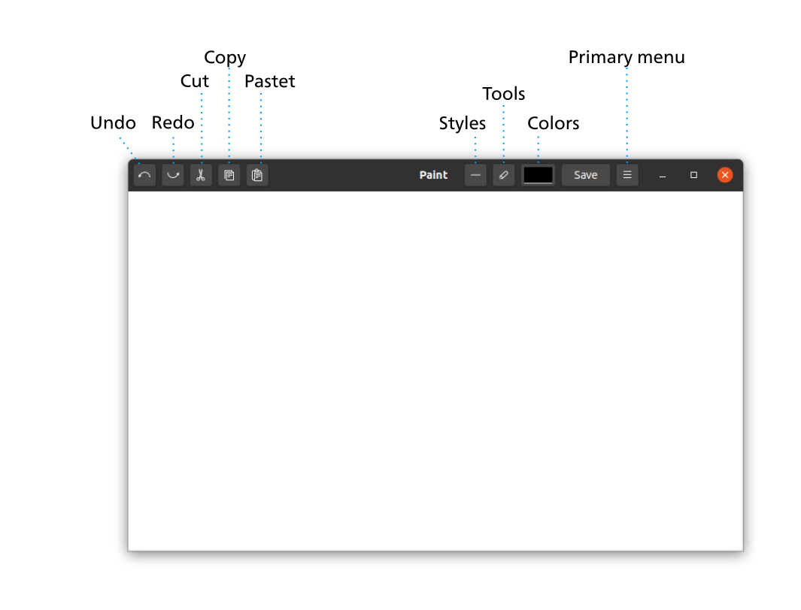
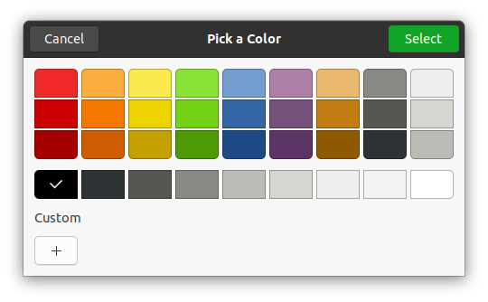
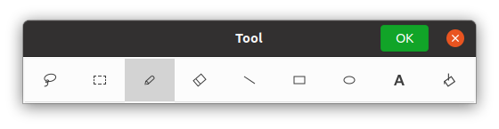
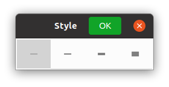

Using Paint
Starting "Paint"
The program filename is "esrille-paint".
Select "Paint" from the graphics application list. A "Paint" window like below will open:

When you move the mouse cursor to the drawing canvas, the mouse cursor becomes a pencil. You can draw a curved line as you drag in the canvas. You can choose a color with the [Color] button. You can choose a tool with the [Tool] button. We will describe each tool in the next sections.
To run "Paint" from the command line, type as follow:
$ esrille-paint [filename]...
In the filename part, type the name of the file you want to open. When creating a new file, you do not have to specify the filename.
Colors
You can choose a color with the [Color] button. A "Pick a Color" dialog like below will open:

Click any color to make it the current color, and click [Select] to change the color. To create your own custom color, click [+] button in the [Pick a Color] dialog.
Tools
You can choose a tool with the [Tool] button. A "Tool" dialog like below will open:

Click any tool to make it the current tool.
Frequently used tools can be selected using keyboard; you can choose a tool simply typing the key listed in the first column in the table below:
| Tool | Description |
|---|---|
 Lasso Lasso |
Create a non-rectangular selection to move, stretch or shrink. Drag in the canvas to select a non-rectangular area. Then position the mouse cursor inside the area surrounded by a dotted outline and drag. • Use the [Shift] key to constrain the movement and/or to maintain the proportion of your selection. • Use the [Escape] key to complete the current selection. |
| Select [S] |
Create a rectangular selection to move, stretch or shrink. Drag in the canvas to select a rectangular area. Then position the mouse cursor inside the area surrounded by a dotted outline and drag. • Use the [Shift] key to constrain the movement and/or to maintain the proportion of your selection. • Use the [Escape] key to complete the current selection. • Use [Ctrl]+[A] to select the entire drawing canvas. |
 Pencil Pencil[P] |
Draw a curved line where you drag. |
 Eraser Eraser[E] |
Erase where you drag. |
 Line Line |
Draw a straight line as you drag. The drawing is completed when you finish dragging. • Use the [Shift] key to constrain drawing. |
| Rectangle | Draw a rectangle as you drag. The drawing is completed when you finish dragging. • Use the [Shift] key to draw squares. |
 Oval Oval |
Draw an oval as you drag. The drawing is completed when you finish dragging. • Use the [Shift] key to draw circles. |
| Text [T] |
Type text. Click where you want to add text. Then type your text. You can move, stretch or shrink the text; position the mouse cursor around the text and drag. • Use the [Shift] key to constrain the movement and/or to maintain the proportion of the text. • Use the [Escape] key to finish typing. |
| Flood Fill | Fill an outlined area. Click in any outlined area you want to fill. |
Style
You can choose a line width with the [Style] button. A "Style" dialog like below will open:

Click any style to make it the current line width.
| Style | Description |
|---|---|
| 1 px | |
 |
2 px |
 |
4 px |
 |
8 px |
Editing
You can use edit buttons to perform image editing tasks, such as Cut and Paste.
| Button | Description |
|---|---|
| Undo [Ctrl]+[Z] |
Undo the last action. |
| Redo [Ctrl]+[Shift]+[Z] |
Redo the last action you undid. |
| Cut [Ctrl]+[X] |
Remove the selection to the Clipboard. |
| Copy [Ctrl]+[C] |
Copy the selection to the Clipboard. |
| Paste [Ctrl]+[V] |
Paste the image or text from the Clipboard. You can move, stretch or shrink the pasted content where you drag. • Use the [Shift] key to constrain the movement and/or to maintain the proportion of the pasted image or text. |
Saving
Your changes to the image will be lost if you don't save them to a file. To save changes, click the [Save] button in the header bar of the "Paint" window. Enter a filename the first time you save a new image, then click the [Save] button in the dialog box.
You can also use [Ctrl]+[S] to save the image.
Primary menu
You can open the primary menu with the [Primary menu] button in the header bar. The primary menu contains the following menu items.
| Menu item | Description |
|---|---|
| New... [Ctrl]+[N] |
Enter the width and height of the new image, then click [OK] to open a new Paint window. |
| Open... [Ctrl]+[O] |
Select the image file to open, then click [Open] to open a new Paint window. |
| Save [Ctrl]+[S] |
Save changes. Enter a filename the first time you save a new image, then click the [Save] button in the dialog box. |
| Save As... | Save a copy of the image. Enter a filename for the copy, then click the [Save] button in the dialog box. |
| Font... | Change the font and font size used with the Text tool. |
| Transparent Mode | If enabled, selection tools do not select pixels of the background color. |
| Background Color | Choose the background color. |
| Help | Open the Paint's user guide in the default web browser. |
| About Paint | Open a dialog box that displays the Paint's version number and other information. |
Note
The file format supported in the Paint version 0.1.0 is only PNG. The other file formats will be supported in the future versions.